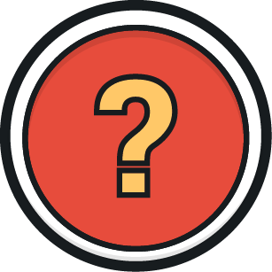
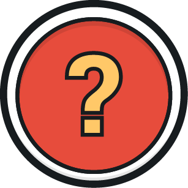

ANDRADE, Fernanda D. Instalações prediais. Porto Alegre: SAGAH, 2018.
ASSOCIAÇÃO BRASILEIRA DE NORMAS TÉCNICAS. ABNT NBR 5410:2004. Rio de Janeiro: ABNT, 2004.
CARVALHO JÚNIOR, Roberto de. Instalações elétricas e o projeto de arquitetura. São Paulo: Blucher, 2018.
CONHEÇA todos os tipos de tomadas e plugs. Leroy Merlin, 30 jun. 2021. Disponível em: https://www.leroymerlin.com.br/dicas/tipos-de-tomadas-e-plugs. Acesso em: 12 jun. 2023.
CONJUNTO 1 Tomada 10a + 1 Tomada 20a Branca de piso 4x4 – Alumínio – Tpa016. Leroy Merlin, c2023a. Disponível em: https://www.leroymerlin.com.br/conjunto-1-tomada-10a---1-tomada-20a-branca-de-piso-4x4---aluminio---tpa016_1568104941. Acesso em: 12 jun. 2023.
CONSELHO FEDERAL DOS TÉCNICOS INDUSTRIAIS. Resolução CFT nº 096. Brasília: CFT, 2020.
CORES de fios elétricos — Confira uma tabela completa. Conduscamp, c2022. Disponível em: https://conduscamp.com.br/blog/tabela-de-cores-de-fios-eletricos/. Acesso em: 12 jun. 2023.
EVIDENCE. Fame, [s. d.]. Disponível em: https://fame.com.br/material-eletrico/evidence. Acesso em: 7 jul. 2023.
HARADA, Eduardo. Qual interruptor inteligente comprar para a sua casa? Tecmundo, 2 set. 2021. Disponível em: https://www.tecmundo.com.br/produto/224241-interruptor-inteligente-comprar-casa.htm. Acesso em: 12 jun. 2023.
INTERRUPTOR de tecla 16.123 – Moldura M2 – unipolar. MarGirius, [s. d.]. Disponível em: https://www.margirius.com.br/produto/interruptor-de-tecla-16-123-unipolar/. Acesso em: 7 jul. 2023.
INTERRUPTOR de Tecla para Móveis, Moldura M8, Branco Unipolar 16.123. Hiperfer, [s. d.]. Disponível em: https://www.hiperfer.com.br/interruptor-de-tecla-branco-para-moveis-moldura-m8-unipolar-16-123-pacote-com-10-pecas-margirius. Acesso em: 7 jul. 2023.
INTERRUPTORES. Leroy Merlin, c2023b. Disponível em: https://www.leroymerlin.com.br/interruptores. Acesso em: 7 jul. 2023.
JUSTINO, Guilherme. 110V e 220V: por que cidades diferentes têm tensões diferentes? GZH, 17 ago. 2016. Disponível em: https://gauchazh.clicrbs.com.br/comportamento/noticia/2016/08/110v-e-220v-por-que-cidades-diferentes-tem-tensoes-diferentes-7288429.html. Acesso em: 7 jul. 2023.
MORAES, André. Tomadas: 10A ou 20A? Qual a diferença entre elas? Blog EletroJr., [2021?]. Disponível em: https://eletrojr.com.br/2020/12/14/tomadas-10a-ou-20a-qual-a-diferenca-entre-elas/. Acesso em 12 jun. 2023.
TORRE de tomada retrátil com 3 tomadas. Metalferco, [s. d.]. Disponível em: https://www.metalferco.com.br/torre-de-tomada-retratil-com-3-tomadas/p. Acesso em: 12 jun. 2023.
ARCHI: perfil de embutir plano 24V 28MM. Stella, c2019a. Disponível em: https://stella.com.br/produto/archi-perfil-embutir-plano-24v-28mm-br. Acesso em: 7 jul. 2023.
BULBO 7W. Stella, c2019b. Disponível em: https://stella.com.br/produto/bulbo-7w. Acesso em: 20 jun. 2023.
CRUZ, Karen. Tipos de lâmpadas: tudo o que você precisa saber! Empório Luz, 27 maio 2022. Disponível em: https://www.emporioluz.com.br/blog/tipos-de-lampadas-tudo-o-que-voce-precisa-saber/. Acesso em: 20 jun. 2023.
FIM da linha para as lâmpadas incandescentes. ABilumi, 20 jun. 2016. Disponível em: https://www.abilumi.org.br/fim-da-linha-para-as-lampadas-incandescentes/. Acesso em: 20 jun. 2023.
FITA de LED 120 LEDs 12V 24W IP20 6500K 05 Metros. Cia. do LED, [s. d.]. Disponível em: https://www.ciadoled.com.br/fitas-led/fitas-led-12v/fita-de-led-120-leds-12v-24w-ip20-6500k-05-metros. Acesso em: 20 jun. 2023.
LÂMPADA fluorescente compacta espiral 11w 220v 48les11wb004 Elgin. Eletrônica Santana, [s. d.]. Disponível em: https://www.eletronicasantana.com.br/lampada-fluorescente-compacta-espiral-11w-220v-48les11wb004-elgin/p. Acesso em: 20 jun. 2023.
LÂMPADA Halógena Taschibra A55 70W E27 2700K. Bravalumi, [s. d.]. Disponível em: https://www.bravalumi.com.br/lampada-halogena-taschibra-a55-70w-e27-2700k. Acesso em: 20 jun. 2023.
LÂMPADA Led 4U 18W 6500K 2430Lm 127-220V Sorteluz 20375. Eletropolo, c2021. Disponível em: https://www.lojaseletropolo.com.br/lampada-led-4u-18w-6500k-2430lm-127-220v-sorteluz-20375/p. Acesso em: 20 jun. 2023.
LÂMPADA LED vela lisa filamento dimerizável E14 2400k 4W 110V. Inspire Home, [s. d.]. Disponível em: https://www.inspirehome.com.br/lampada-led-vela-lisa-filamento-dimerizavel-e14-2400k-4w-110v-pix-iluminacao-36506103/p?gclid=cj0kcqjw756lbhdmarisaei0agnquoj7yzlxzhekdzvjqffpt9qv7tv_d_-cxxqpnwgu-7mjwl5ag7iaanlfealw_wcb. Acesso em: 7 jul. 2023.
LÂMPADA Vapor de Sódio Ovóide 400W E-40. RJE Iluminação, [s. d.]. Disponível em: https://www.rjeiluminacao.com.br/lampadas/lampada-vapor-de-sodio-ovoide-400w-e-40. Acesso em: 20 jun. 2023.
PLAFON de sobrepor Eco 24W. Stella, c2019c. Disponível em: https://stella.com.br/produto/plafon-sobrepor-eco-24w. Acesso em: 7 jul. 2023.
TEMPERATURA de cor. Avant, 23 jun. 2021. Disponível em: https://avantlux.com.br/temperatura-de-cor/. Acesso em: 20 jun. 2023.
THOMAS Edison. Toda Matéria, c2011-2023. Disponível em: https://www.todamateria.com.br/thomas-edison/. Acesso em: 1º ago. 2023.
TREGENZA, Peter; LOE, David. Projeto de iluminação. 2. ed. Porto Alegre: Bookman, 2015.
AR70 e AR111 PR. Evolução em estado puro. Stella, [s. d.]. Disponível em: https://stella.com.br/lp/arspro/. Acesso em: 23 jun. 2023.
CASTAGNA, Ana C.; SOUZA, Camila Dias de; MARQUES, Carolina C R. et al. Luminotécnica. Grupo A, 2020. Disponível em: https://integrada.minhabiblioteca.com.br/#/books/9786581492403/. Acesso em: 23 jun. 2023.
CHING, Francis D. K.; BINGGELI, Corky. Arquitetura de interiores ilustrada. Grupo A, 2019. Disponível em: https://integrada.minhabiblioteca.com.br/#/books/9788582605165/. Acesso em: 23 jun. 2023.
CRUZ, Eloá. A iluminação do futuro. Gazeta do Povo, 22 jan. 2014. Disponível em: https://www.gazetadopovo.com.br/haus/arquitetura/a-iluminacao-do-futuro/. Acesso em: 23 jun. 2023.
DRUMOND, Fernanda. Iluminação é destaque na Casa Cor PR 2015. Casacor, 31 jul. 2015. Disponível em: https://casacor.abril.com.br/ambientes/iluminacao-e-destaque-na-casa-cor-pr-2015/. Acesso em: 23 jun. 2023.
MARIA EDUARDA. Um guia sobre pendentes e lustres de LED. Iluminim, 20 jul. 2021. Disponível em: https://blog.iluminim.com.br/um-guia-sobre-pendentes-e-lustres-de-led-completo/. Acesso em: 23 jun. 2023.
GUERRINI, Délio P. Iluminação – Teoria e projeto. Saraiva, 2009. Disponível em: https://integrada.minhabiblioteca.com.br/#/books/9788536520476/. Acesso em: 23 jun. 2023.
ILUMINAÇÃO para sala de casa. Liven Casa, 28 mar. 2022. Disponível em: https://blog.livencasa.com/iluminacao-para-sala-de-casa-em-2022/. Acesso em: 23 jun. 2023.
INVISTA no projeto luminotécnico para a valorização estética do seu imóvel. G-Light, 24 maio 2022. Disponível em: https://www.glight.com.br/blog/invista-no-projeto-luminotecnico-para-valorizacao-estetica-do-seu-imovel/. Acesso em: 23 jun. 2023.
LIMA, Rafael. In: FACHADA contemporânea cinza com volumetria e revestimento 3D + iluminação em fita de LED. Decorsalteado, c2019. Disponível em: https://www.decorsalteado.com/2021/02/fachada-contemporanea-cinza-com.html?m=1. Acesso em: 23 jun. 2023.
O QUE são luminárias wall whashers. Empório Luz, 10 dez. 2021. Disponível em: https://www.emporioluz.com.br/blog/o-que-sao-luminarias-wall-washers/. Acesso em: 23 jun. 2023.
PLAFON Asteria Up Branco. João Lopes Iluminação, c2023. Disponível em: https://joaolopesiluminacao.com/produto/plafon-asteria-up-branco/. Acesso em: 23 jun. 2023.
SERÓDIO, Yuri. In: JARDIM Hanazaki/Hanazaki Paisagismo. ArchDaily, 28 abr. 2020. Disponível em: https://www.archdaily.com.br/br/938476/jardim-hanazaki-hanazaki-paisagismo. Acesso em: 23 jun. 2023.
TAVARES, Ivo. In: A CASA do campo lindo. ArchDaily, 2019. Disponível em: https://www.archdaily.com.br/br/938658/a-casa-do-campo-lindo-ren-ito?ad_source=search&ad_medium=projects_tab. Acesso em: 23 jun. 2023.
TIPOS de iluminação: como escolher o ideal para cada ambiente de casa? Cada Caso um Caso, 2 ago. 2022. Disponível em: https://www.cadacasaumcaso.com.br/cuidados/cuidados-com-a-casa/tipos-de-iluminacao-para-cada-ambiente/. Acesso em: 23 jun. 2023.
TOLEDO, Beatriz Guimarães. Integração de iluminação natural e artificial: métodos e guia prático para projeto luminotécnico. 2008. 190 f. Dissertação (Mestrado em Arquitetura e Urbanismo) – Universidade de Brasília, Brasília, 2008.
YAMAZAKI, Gabrielle Prado J. Projetos de iluminação, mobiliário e desenho universal. Saraiva, 2021. E-book. ISBN 9786589881308. Disponível em: https://integrada.minhabiblioteca.com.br/#/books/9786589881308/. Acesso em: 23 jun. 2023.
ASSISTENTE virtual: 7 melhores dispositivos para 2023. JivoChat, 23 set. 2021. Disponível em: https://www.jivochat.com.br/blog/reviews/produtos/assistente-virtual.html. Acesso em: 13 jun. 2023.
AUTOMAÇÃO residencial: entenda como usar e encantar o cliente! Viva Decora, 4 fev. 2022. Disponível em: https://www.vivadecora.com.br/pro/automacao-residencial/. Acesso em: 13 jun. 2023.
KOSTEN-HAUS. Automação predial: o que é, como funciona e por que investir nisso. Kosten-Haus, 27 maio 2021. Disponível em: https://www.kostenhaus.com.br/artigo/automacao-predial. Acesso em: 13 jun. 2023.
MÓDULO Dimmer Rotativo PW-470 220V Pw Eletronica. Leroy Merlin, c2023a. Disponível em: https://www.leroymerlin.com.br/modulo-dimmer-rotativo-pw-470-220v-pw-eletronica_87330523. Acesso em: 13 jun. 2023.
O QUE é automação predial? Guia completo! TOTVS, 23 set. 2022. Disponível em: https://www.totvs.com/blog/gestao-para-construcao/automacao-predial/. Acesso em: 13 jun. 2023.
PRUDENTE, Francesco. Automação predial e residencial: uma introdução. Rio de Janeiro: LTC, 2017.
SENSOR de movimento infravermelho passivo. Intelbras, c2023a. Disponível em: https://www.intelbras.com/pt-br/sensor-de-movimento-infravermelho-passivo-ivp-9000-mw. Acesso em: 13 jun. 2023.
SOARES JÚNIOR, Wellington. O que são lâmpadas dimerizáveis? Bluelux, c2020. Disponível em: https://www.bluelux.com.br/o-que-sao-lampadas-dimerizaveis/. Acesso em: 13 jun. 2023.
STEVAN JUNIOR, Sergio Luiz. Domótica: automação residencial e casas inteligentes com Arduino e ESP8266. São Paulo: Érica, 2019.
TAG de acesso por proximidade. Intelbras, c2023b. Disponível em: https://www.intelbras.com/pt-br/tag-de-acesso-por-proximidade-th-1000. Acesso em: 13 jun. 2023.
TECNOLOGIAS para ter mais acessibilidade em casa: confira as novidades. Leroy Merlin, c2023b. Disponível em: https://www.leroymerlin.com.br/dicas/tecnologia-acessibilidade. Acesso em: 13 jun. 2023.
VALERI, Vitor. Os melhores apps de casa inteligente (smart home) para Android. Oficina da Net, 14 mar. 2022. Disponível em: https://www.oficinadanet.com.br/tecnologia/40132-melhores-apps-casa-inteligente--android. Acesso em: 13 jun. 2023.
CASTAGNA, Ana C.; SOUZA, Camila Dias de; MARQUES, Carolina C. R. et al. Luminotécnica. Grupo A, 2020. E-book. ISBN 9786581492403. Disponível em: https://integrada.minhabiblioteca.com.br/#/books/9786581492403/. Acesso em: 5 jun. 2023.
GALINATTI, Anna C. M.; BARBOSA, Marilia P. de A.; GRABASCK, Jaqueline R. et al. Projeto de arquitetura de interiores residenciais. Grupo A, 2020. E-book. ISBN 9786581492588. Disponível em: https://integrada.minhabiblioteca.com.br/#/books/9786581492588/. Acesso em: 23 jun. 2023.
SOUZA, Dias C.; GRABASCK, Ramos J.; RODRIGUES, Guimarães et al. Luminotécnica aplicada. Grupo A. E-book. ISBN 9788595027923. Disponível em: https://integrada.minhabiblioteca.com.br/#/books/9788595027923/. Acesso em: 5 jun. 2023.
YAMAZAKI, Gabrielle Prado J. Projetos de iluminação, mobiliário e desenho universal. Saraiva, 2021. E-book. ISBN 9786589881308. Disponível em: https://integrada.minhabiblioteca.com.br/#/books/9786589881308/. Acesso em: 5 jun. 2023.
ARCHI. Perfil de embutir recuado 24V 24MM. Stella, c2019a. Disponível em: https://stella.com.br/produto/archi-perfil-embutir-recuado-24v-24mm-br. Acesso em: 23 jun. 2023.
ASSOCIAÇÃO BRASILEIRA DE NORMAS TÉCNICAS. ABNT NBR/ISSO 8995-1: iluminação de ambientes de trabalho. Parte 1: Interior. Rio de Janeiro: ABNT, 2013.
CAHLER, Marc Ballbe. Gonio-fotómetro o esfera integradora. Ventajas y desventajas. Todolux Academy, 16 mar. 2021. Disponível em: https://todo-lux.com/investigacion-y-desarrollo/gonio-fotometro-esfera-integradora-ventajas-y-desventajas/. Acesso em: 23 jun. 2023.
LUXÍMETRO Profissional Data Logger e Software – DT-8809A – CEM. Hepta Instrumentos, c2023. Disponível em: https://hepta-instrumentos.com.br/produtos/luximetro-profissional-data-logger-e-software-dt-8809a-cem/ https://stella.com.br/produto/painel. Acesso em: 23 jun. 2023.
PAINEL de embutir Eco 6W. Stella, c2019b. Disponível em: https://stella.com.br/produto/painel. Acesso em: 23 jun. 2023.
ASSOCIAÇÃO BRASILEIRA DE ARQUITETOS DE ILUMINAÇÃO. Manual de escopo de projetos e serviços – Luminotécnica. 2. ed. São Paulo. Disponível em: http://www.manuaisdeescopo.com.br/manual/luminotecnica/#1. Acesso em: 18 jun. 2023.
ASSOCIAÇÃO BRASILEIRA DE NORMAS TÉCNICAS. NBR 13.532: elaboração de projetos de edificações: arquitetura. Rio de Janeiro, 1995.
ASSOCIAÇÃO BRASILEIRA DE NORMAS TÉCNICAS. NBR ISO/CIE 8.995-1: iluminação de ambientes de trabalho. Rio de Janeiro, 2013.
CASTAGNA, Ana C.; SOUZA, Camila Dias de; MARQUES, Carolina C R.; et al. Luminotécnica. Porto Alegre: Sagah, 2019. E-book. ISBN 9786581492403. Disponível em: https://integrada.minhabiblioteca.com.br/#/books/9786581492403/. Acesso em: 18 jun. 2023.
GUERRINI, Délio P. Iluminação – Teoria e projeto. São Paulo: Saraiva, 2009. E-book. ISBN 9788536520476. Disponível em: https://integrada.minhabiblioteca.com.br/#/books/9788536520476/. Acesso em: 18 jun. 2023.
KIT 2 Luminária Pendente Soquete Bocal E27 Com Lâmpada Led Vintage Luz Amarela Formato Pêra Preto Com Chumbo. Leroy Merlin, c2023. Disponível em: https://www.leroymerlin.com.br/kit-2-luminaria-pendente-soquete-bocal-e27-com-lampada-led-vintage-luz-amarela-formato-pera--preto-com-chumbo_1567956583. Acesso em: 23 jul. 2023.
NITZSCHE, Ugo. Luz e Atmosferas. In: MÊS DO DESIGNER DE INTERIORES DO CURSO TÉCNICO EM DESIGN DE INTERIORES DO SENAC EAD, Porto Alegre, 2021. Palestra de 21 de outubro.
OLIVEIRA, P. R. G. Cartilha informativa sobre lighting design. 2012. 18 f. Monografia (Pós-Graduação em Iluminação e Design de Interiores) – Instituto de Pós-Graduação, Londrina, 2012. Disponível em: https://bit.ly/2qnfJNy. Acesso em: 18 jun. 2023.
SOUZA, Dias C.; GRABASCK, Ramos J.; RODRIGUES, Guimarães; et al. Luminotécnica aplicada. Porto Alegre: Sagah, 2018. E-book. ISBN 9788595027923. Disponível em: https://integrada.minhabiblioteca.com.br/#/books/9788595027923/. Acesso em: 18 jun. 2023.
TREGENZA, Peter; LOE, David. Projeto de iluminação. Porto alegre: Bookman, 2015. E-book. ISBN 9788582603352. Disponível em: https://integrada.minhabiblioteca.com.br/#/books/9788582603352/. Acesso em: 18 jun. 2023.
WELLS ABBOTT SHOWROOMS. The Anna-Morris New York display in the Dallas showroom! Dallas, [s. d.]. Pinterest: @wellsabbottshowroom. Disponível em: https://br.pinterest.com/pin/737394138979302000. Acesso em: 23 jul. 2023.
ZENUN, M. M. N. Briefing em projetos de iluminação residencial: proposta de um guia. ISSN 2179. Revista Especialize Online IPOG Goiânia, 8. ed., n. 009, v. 01/2014, dez. 2014.


 
